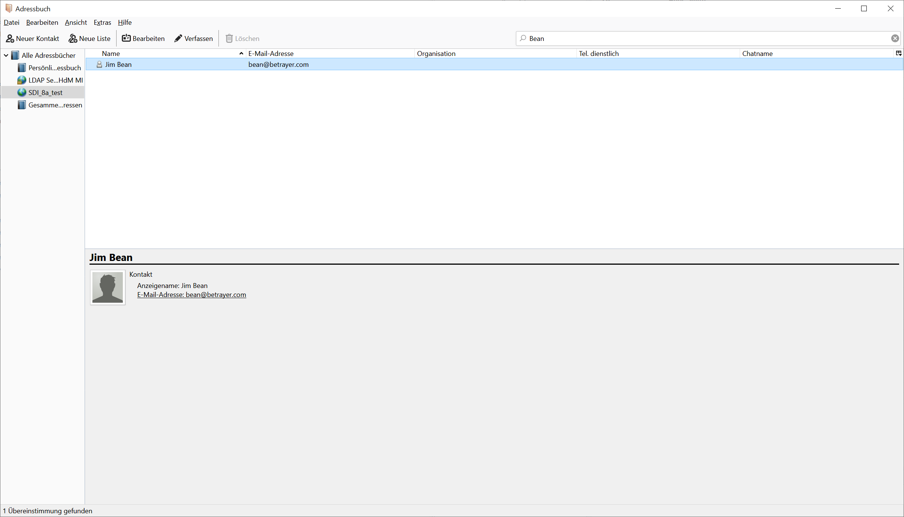

| 5. Accessing LDAP data by a mail client | ||
|---|---|---|
 | Chapter 3. LDAP |  |
| 5. Accessing LDAP data by a mail client | ||
|---|---|---|
| | Chapter 3. LDAP | |
We configured our mail clients to use our LDAP Server for email address lookup. The example image shows the result in Thunderbird:
|  |
| |  | |
| 4. Testing a bind operation as non - admin user |  | 6. LDAP configuration |